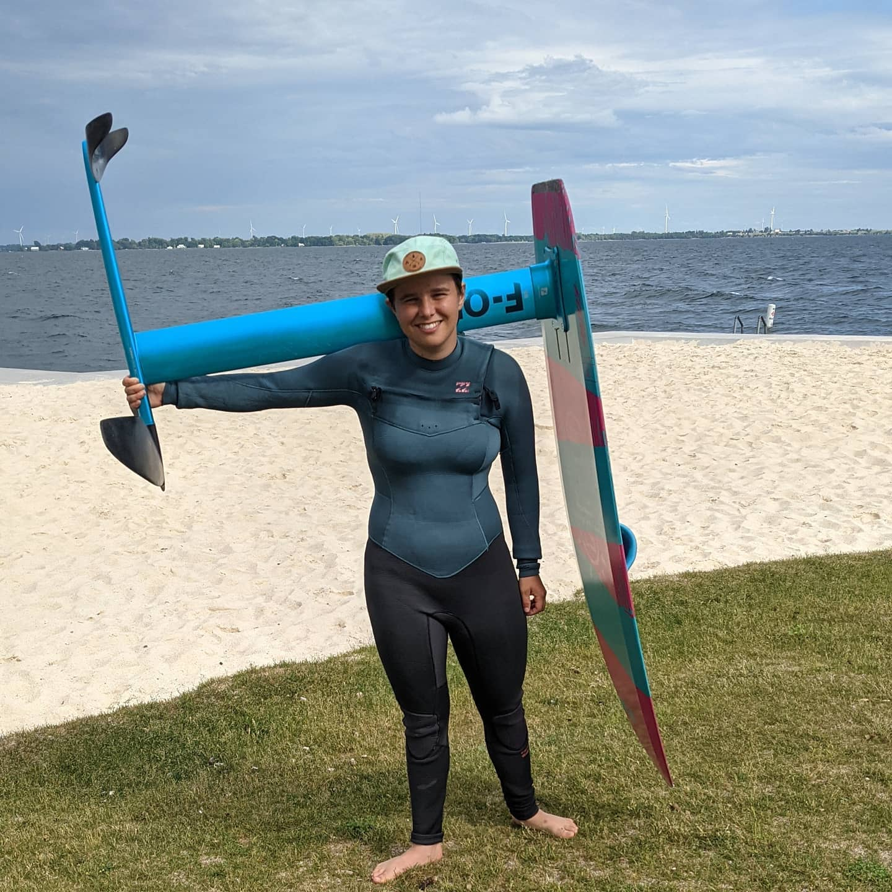
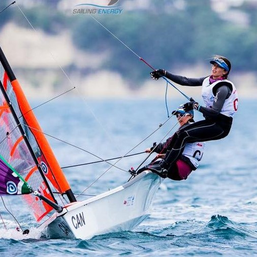
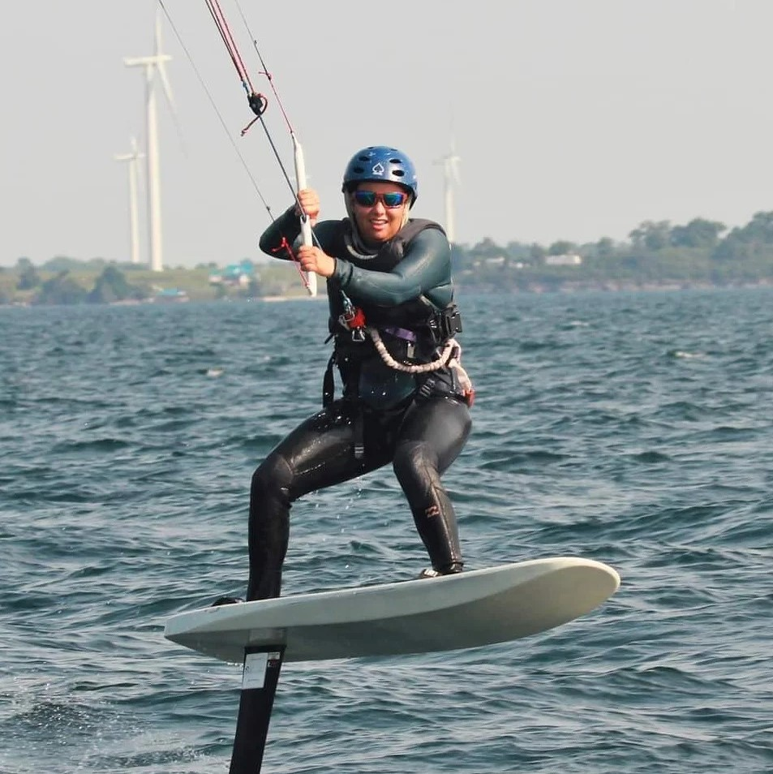
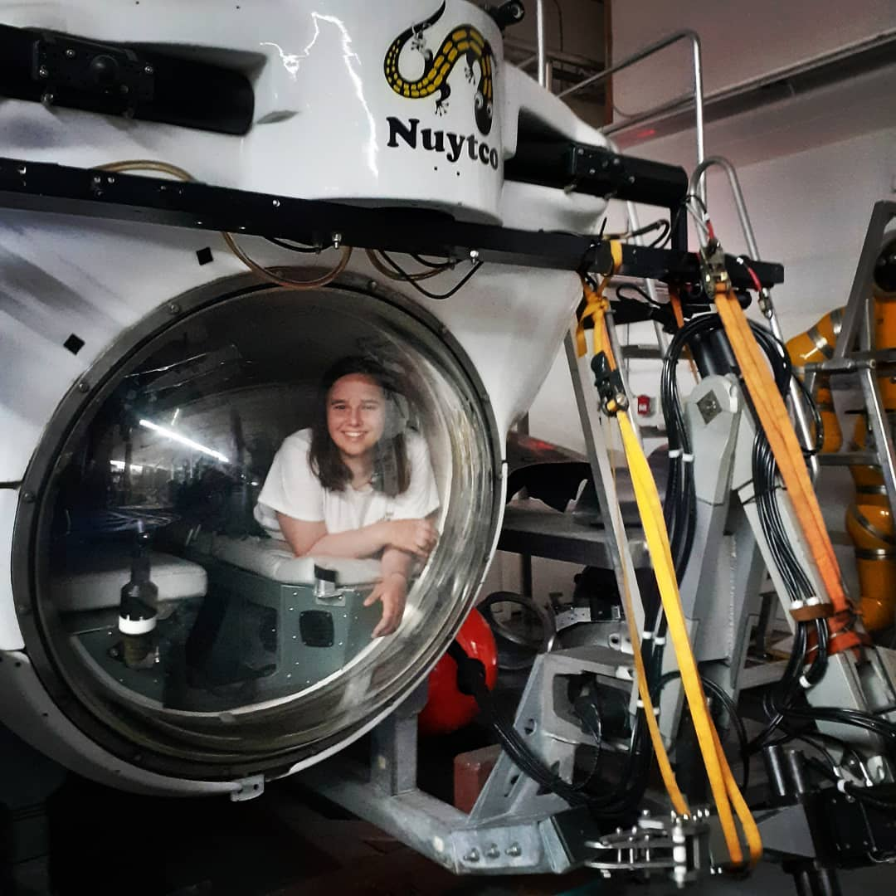
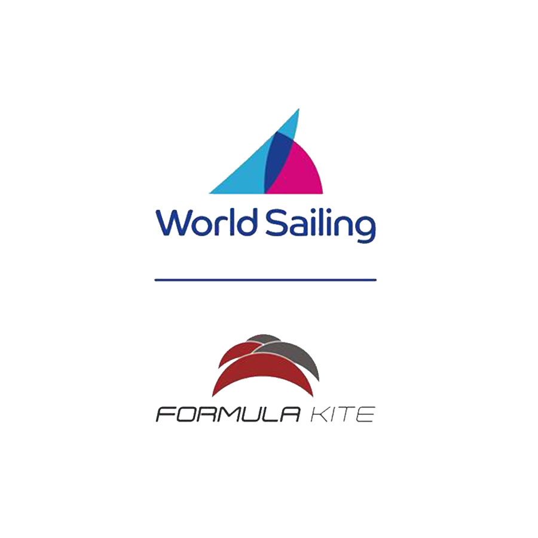
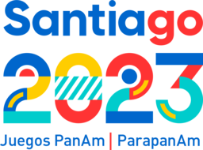
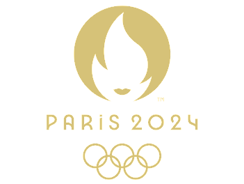

The Sport
This is IKA Formula Kite, the discipline of kiteboarding that has been selected as an event at the 2024 Olympic Games.
Who am I?
My name is Emily Bugeja. I am a 22 year old Canadian female sailor, kite foiler, and electrical engineer with a passion for competition and a love of hard work.
In 2014, I set a goal to represent Canada at the 2024 Olympic Games in sailing. At the time, with my less than mediocre sailing career, it seemed like a pipe dream. Seven years and a lot of hard work later, this dream is closer than ever to becoming reality.
Sailor
I started sailing the optimist when I was 8 years old, and ever since then it’s been hard to get me off the water. Competing since 2010, it’s been a long journey to get to where I am now. Some highlights have been qualifying for and competing at the 2016 Youth Worlds in Auckland New Zealand, and winning a Bronze medal at the 2017 Canada Games in the Women’s 29er Class.
Kite Foiler
Claim to fame: I’ve never been upwind on a twin tip. I don’t mind doing things the hard way, and jumped in the deep end with a kite and foil in July of 2020. Now almost having figured out all of the maneuvers and coming top female at the 2021 FORK regatta in Kingston, I look forward to competing internationally in 2022.
Electrical Engineer
...Almost. I will be graduating from Queen's University in Spring, 2022 with my Electrical Engineering degree. I am a total robotics, sensors, and systems nerd always looking for new, creative ways to solve problems. My past experiences include being an Electronics Intern at Nuytco Research Limited, where I worked on sub-sea systems and robotics, and also working as a research assistant in the Offroad Robotics lab at Queen's.
The Path to the Games
The Big Picture

2022
Train and compete internationally, attending major class events and focused training blocks.
2023
Qualify for and compete in the 2023 Pan Am Games, earning a Canadian Olympic berth. Continue training and competing internationally with the goal of coming in top 10 at events.
2024
Goal of medalling at international events, Qualify to represent Canada at Olympic Games. Race in Paris 2024.
So What's Next?
Winter training and dryland in BC
Training and US Open Regatta in Clearwater, FL
Training block in La Ventana, Mexico
Beyond the immediate dates and competitions, I am in the process of finding a job for after graduation. Additionally, I am planning a European training block in the late Summer/early Fall.